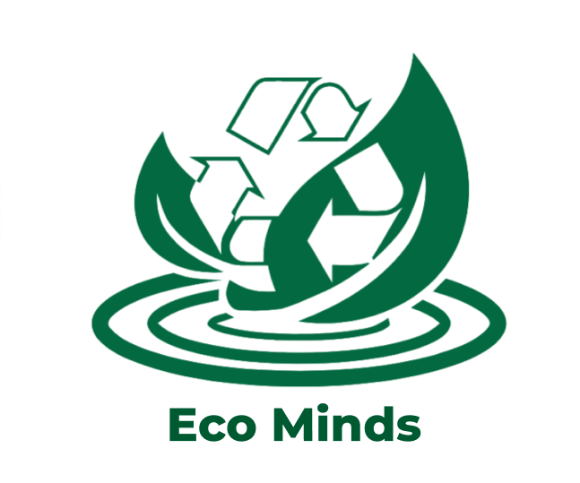

Inicio
Guías
Presentaciones
Campañas
Iniciar Sesión
Regístrate Ahora
Puntos de Acopio en Lima Metropolitana
Detecta tu ubicación para encontrar el punto de acopio más cercano:
Buscar punto más cercano